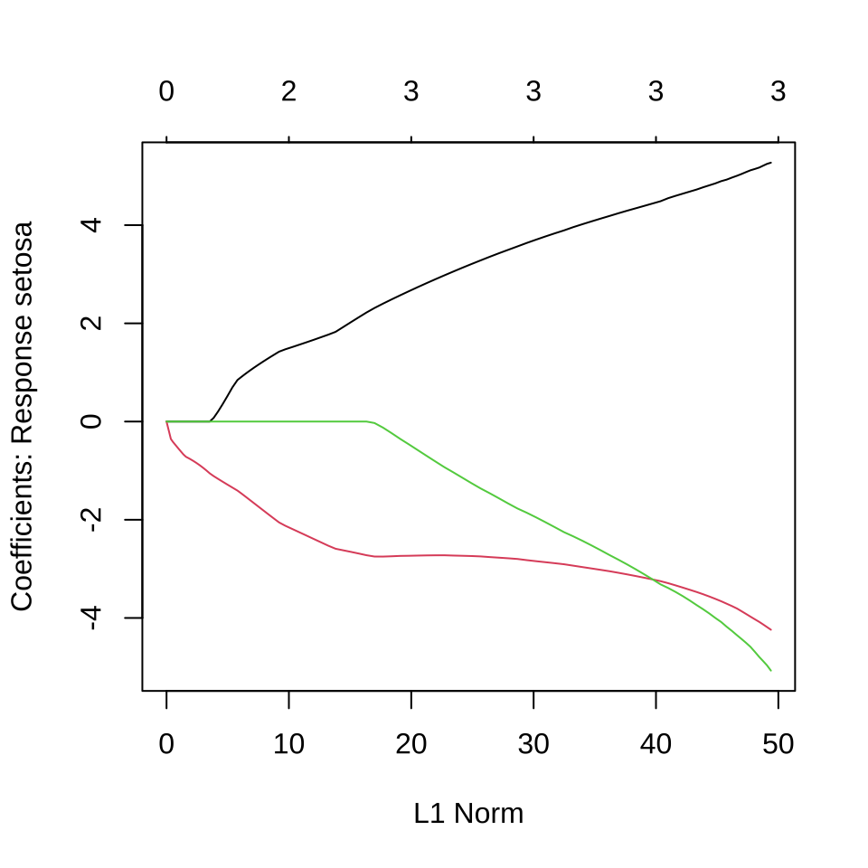
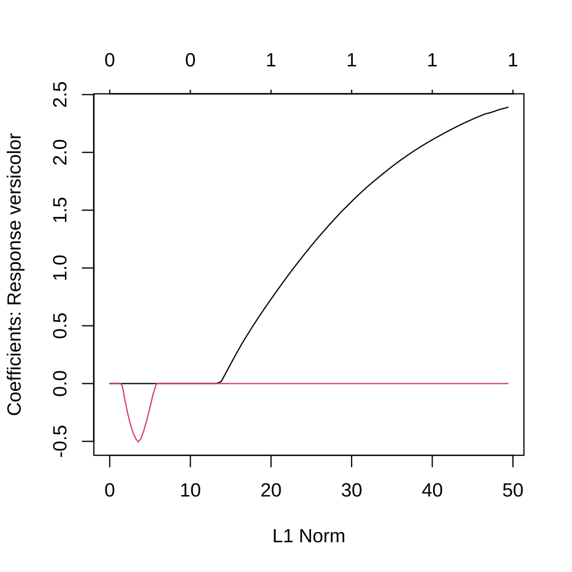
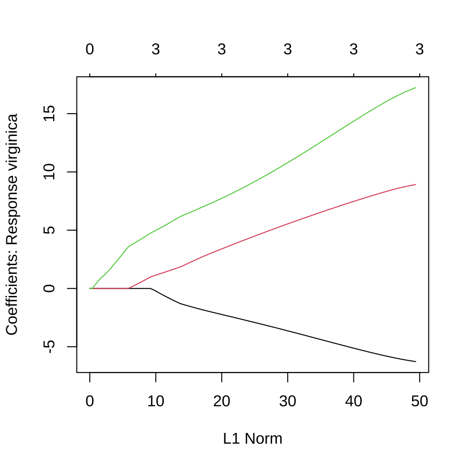
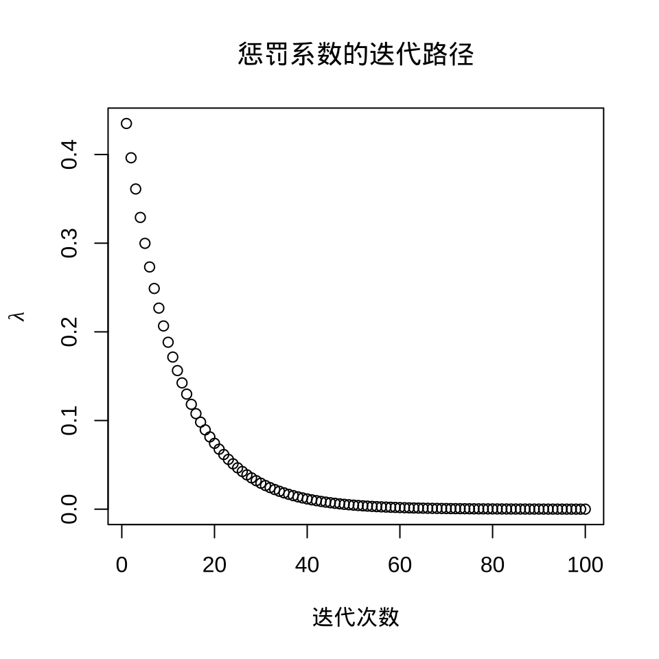
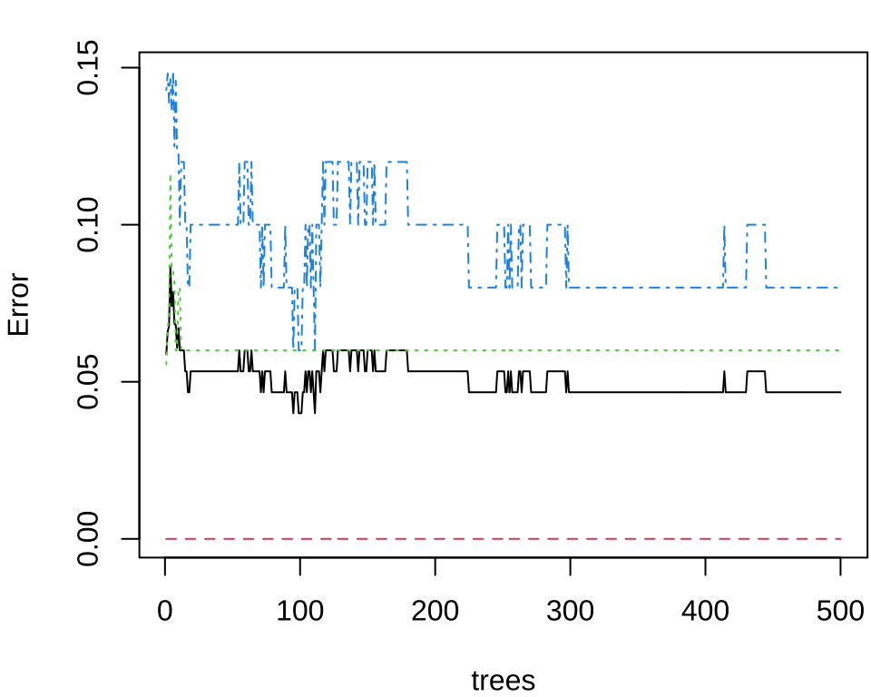

library(nnet) # 多项回归/神经网络 multinom / nnet
library(MASS) # 线性/二次判别分析 lda / qda
library(glmnet) # 惩罚多项回归 glmnet
library(e1071) # 朴素贝叶斯 naiveBayes 和支持向量机 svm
library(kernlab) # 支持向量机分类 ksvm
library(class) # K 最近邻 knn
library(rpart) # 决策树分类 rpart
library(randomForest) # 随机森林 randomForest
# library(gbm) # 梯度提升机
library(xgboost) # 集成学习
library(lattice)40 分类问题
以 iris 数据集为例，简单，方便介绍模型和算法，定位入门。分类间隔最大化，也是一个优化问题，找一条分界线，一个分割面，一个超平面划分不同的种类。本章篇幅：每个算法 4 页，共计 40 页。10 个算法的介绍按照分类思路，模型，代码和参数说明，分类性能评估。应用案例是手写数字识别。要点不是数据如何复杂，而是怎样把理论写得通俗、准确，看了之后能够应用到复杂的真实数据分析场景中去。理论解释、绘图说明、经验总结。
- 线性分类器
- 多项回归模型
- 线性判别分析
- 非线性分类器
- 二次判别分析
- 朴素贝叶斯
- 支持向量机
- K 最近邻
- 神经网络
- 决策树
- 随机森林
- 集成学习
iris 数据集也来自 Base R 自带的 datasets 包，由 Anderson Edgar 收集，最早见于 1935 年的文章，后被 Ronald Fisher 在研究分类问题时引用 (Fisher 1936)。到如今，在机器学习的社区里，提及 iris 数据集，一般只知 Fisher 不知 Anderson。
提示
- 鸢尾花数据集，逻辑回归拟合，绘制分类边界图，实现 R 版本。
- 参考文献《机器学习的概率视角导论》 (Murphy 2022) 书中图 2.13 的 Python 代码
- 将回归模型用 SQL 表达出来，放在数据库上高性能地执行分类预测。
40.1 多项回归模型
library(nnet) # 多项逻辑回归
iris_multinom <- multinom(Species ~ ., data = iris, trace = FALSE)
summary(iris_multinom)Call:
multinom(formula = Species ~ ., data = iris, trace = FALSE)
Coefficients:
(Intercept) Sepal.Length Sepal.Width Petal.Length Petal.Width
versicolor 18.69037 -5.458424 -8.707401 14.24477 -3.097684
virginica -23.83628 -7.923634 -15.370769 23.65978 15.135301
Std. Errors:
(Intercept) Sepal.Length Sepal.Width Petal.Length Petal.Width
versicolor 34.97116 89.89215 157.0415 60.19170 45.48852
virginica 35.76649 89.91153 157.1196 60.46753 45.93406
Residual Deviance: 11.89973
AIC: 31.89973
setosa versicolor virginica
setosa 50 0 0
versicolor 0 49 1
virginica 0 1 49在有的数据中，观测变量之间存在共线性，采用变量选择方法，比如 Lasso 方法压缩掉一部分变量。
plot(iris_glmnet)
plot(iris_glmnet$lambda,
ylab = expression(lambda), xlab = "迭代次数", main = "惩罚系数的迭代路径"
)




选择一个迭代趋于稳定时的 lambda，比如 iris_glmnet$lambda[80] 。
$setosa
5 x 1 sparse Matrix of class "dgCMatrix"
1
(Intercept) 17.015429
Sepal.Length .
Sepal.Width 4.486992
Petal.Length -3.250342
Petal.Width -3.315393
$versicolor
5 x 1 sparse Matrix of class "dgCMatrix"
1
(Intercept) 8.132656
Sepal.Length 2.123980
Sepal.Width .
Petal.Length .
Petal.Width .
$virginica
5 x 1 sparse Matrix of class "dgCMatrix"
1
(Intercept) -25.148085
Sepal.Length .
Sepal.Width -5.176029
Petal.Length 7.536940
Petal.Width 14.48152440.2 线性判别分析
Call:
lda(Species ~ ., data = iris)
Prior probabilities of groups:
setosa versicolor virginica
0.3333333 0.3333333 0.3333333
Group means:
Sepal.Length Sepal.Width Petal.Length Petal.Width
setosa 5.006 3.428 1.462 0.246
versicolor 5.936 2.770 4.260 1.326
virginica 6.588 2.974 5.552 2.026
Coefficients of linear discriminants:
LD1 LD2
Sepal.Length 0.8293776 -0.02410215
Sepal.Width 1.5344731 -2.16452123
Petal.Length -2.2012117 0.93192121
Petal.Width -2.8104603 -2.83918785
Proportion of trace:
LD1 LD2
0.9912 0.0088 40.3 二次判别分析
Call:
qda(Species ~ ., data = iris)
Prior probabilities of groups:
setosa versicolor virginica
0.3333333 0.3333333 0.3333333
Group means:
Sepal.Length Sepal.Width Petal.Length Petal.Width
setosa 5.006 3.428 1.462 0.246
versicolor 5.936 2.770 4.260 1.326
virginica 6.588 2.974 5.552 2.026
iris_qda_pred setosa versicolor virginica
setosa 50 0 0
versicolor 0 48 1
virginica 0 2 49代码
library(mda)
# Mixture Discriminant Analysis 混合判别分析
iris_mda <- mda(Species ~ ., data = iris)
# 预测
iris_mda_pred <- predict(iris_mda, newdata = iris[, -5])
# 预测结果
table(iris_mda_pred, iris[, 5])
# Flexible Discriminant Analysis 灵活判别分析
iris_fda <- fda(Species ~ ., data = iris)
# 预测
iris_fda_pred <- predict(iris_fda, newdata = iris[, -5])
# 预测结果
table(iris_fda_pred, iris[, 5])
# Regularized Discriminant Analysis 正则判别分析
library(klaR)
iris_rda <- rda(Species ~ ., data = iris, gamma = 0.05, lambda = 0.01)
# 输出结果
summary(iris_rda)
# 预测
iris_rda_pred <- predict(iris_rda, newdata = iris[, -5])$class
# 预测结果
table(iris_rda_pred, iris[, 5])40.4 朴素贝叶斯
Naive Bayes Classifier for Discrete Predictors
Call:
naiveBayes.default(x = X, y = Y, laplace = laplace)
A-priori probabilities:
Y
setosa versicolor virginica
0.3333333 0.3333333 0.3333333
Conditional probabilities:
Sepal.Length
Y [,1] [,2]
setosa 5.006 0.3524897
versicolor 5.936 0.5161711
virginica 6.588 0.6358796
Sepal.Width
Y [,1] [,2]
setosa 3.428 0.3790644
versicolor 2.770 0.3137983
virginica 2.974 0.3224966
Petal.Length
Y [,1] [,2]
setosa 1.462 0.1736640
versicolor 4.260 0.4699110
virginica 5.552 0.5518947
Petal.Width
Y [,1] [,2]
setosa 0.246 0.1053856
versicolor 1.326 0.1977527
virginica 2.026 0.2746501# 预测
iris_nb_pred <- predict(iris_nb, newdata = iris, type = "class")
# 预测结果
table(iris_nb_pred, iris[, 5])
iris_nb_pred setosa versicolor virginica
setosa 50 0 0
versicolor 0 47 3
virginica 0 3 4740.5 支持向量机
e1071 包也提供支持向量机
Call:
svm(formula = Species ~ ., data = iris)
Parameters:
SVM-Type: C-classification
SVM-Kernel: radial
cost: 1
Number of Support Vectors: 51# 预测
iris_svm_pred <- predict(iris_svm, newdata = iris, probability = FALSE)
# 预测结果
table(iris_svm_pred, iris[, 5])
iris_svm_pred setosa versicolor virginica
setosa 50 0 0
versicolor 0 48 2
virginica 0 2 48kernlab 包提供核支持向量机。
Support Vector Machine object of class "ksvm"
SV type: C-svc (classification)
parameter : cost C = 1
Gaussian Radial Basis kernel function.
Hyperparameter : sigma = 0.844749089906062
Number of Support Vectors : 59
Objective Function Value : -4.6559 -5.2052 -20.1785
Training error : 0.026667 kernlab 包 (Karatzoglou 等 2004) 的绘图函数 plot() 仅支持二分类模型。
40.6 K 最近邻
40.7 神经网络
library(nnet)
iris_nnet <- nnet(Species ~ ., data = iris, size = 4, trace = FALSE)
summary(iris_nnet)a 4-4-3 network with 35 weights
options were - softmax modelling
b->h1 i1->h1 i2->h1 i3->h1 i4->h1
313.37 -52.36 132.34 93.19 -508.93
b->h2 i1->h2 i2->h2 i3->h2 i4->h2
-94.96 -62.09 -445.70 936.78 447.51
b->h3 i1->h3 i2->h3 i3->h3 i4->h3
-25.73 -127.41 -78.58 -51.57 -11.12
b->h4 i1->h4 i2->h4 i3->h4 i4->h4
-3995.46 -171.71 -475.36 982.84 968.54
b->o1 h1->o1 h2->o1 h3->o1 h4->o1
474.39 374.36 -620.88 -68.94 -928.06
b->o2 h1->o2 h2->o2 h3->o2 h4->o2
-100.66 -25.99 918.60 102.49 -443.07
b->o3 h1->o3 h2->o3 h3->o3 h4->o3
-373.71 -348.73 -298.58 -33.30 1371.01 size 隐藏层中的神经元数量
40.8 决策树
n= 150
node), split, n, loss, yval, (yprob)
* denotes terminal node
1) root 150 100 setosa (0.33333333 0.33333333 0.33333333)
2) Petal.Length< 2.45 50 0 setosa (1.00000000 0.00000000 0.00000000) *
3) Petal.Length>=2.45 100 50 versicolor (0.00000000 0.50000000 0.50000000)
6) Petal.Width< 1.75 54 5 versicolor (0.00000000 0.90740741 0.09259259) *
7) Petal.Width>=1.75 46 1 virginica (0.00000000 0.02173913 0.97826087) *预测结果，训练误差
# 预测
iris_pred_rpart <- predict(iris_rpart, iris[, -5], type = "class")
# 预测结果
table(iris_pred_rpart, iris[, 5])
iris_pred_rpart setosa versicolor virginica
setosa 50 0 0
versicolor 0 49 5
virginica 0 1 45party 包和 partykit 包也提供类似的功能，前者是基于 C 语言实现，后者基于 R 语言实现。
代码
# 与 rpart 包分类的结果一样
library(partykit)
iris_party <- ctree(Species ~ ., data = iris)
plot(iris_party)
iris_pred_party <- predict(iris_party, iris[, -5], type = "response")
table(iris_pred_party, iris[, 5])
# PART 算法
library(RWeka)
iris_weka <- PART(Species ~ ., data = iris)
# 输出拟合结果
summary(iris_weka)
# 预测
iris_pred_weka <- predict(iris_weka, newdata = iris[, -5], type = "class")
# 预测结果
table(iris_pred_weka, iris[, 5])
# Bagging CART
library(ipred)
iris_ipred <- bagging(Species ~ ., data = iris)
# 输出拟合结果
# summary(iris_ipred)
# 预测
iris_pred_ipred <- predict(iris_ipred, newdata = iris[, -5], type = "class")
# 预测结果
table(iris_pred_ipred, iris[, 5])
# Boosted C5.0
library(C50)
iris_C50 <- C5.0(Species ~ ., data = iris)
# 预测
iris_pred_C50 <- predict(iris_C50, newdata = iris[, -5])
# 预测结果
table(iris_pred_C50, iris[, 5])
# Gradient Boosted Machine
# Warning message:
# Setting `distribution = "multinomial"` is ill-advised
# as it is currently broken.
# It exists only for backwards compatibility. Use at your own risk.
library(gbm)
iris_gbm <- gbm(Species ~ ., data = iris, distribution = "multinomial")
# 预测
iris_pred_gbm <- predict(iris_gbm, newdata = iris[, -5], n.trees = 1, type = "response")
# 转化为与响应变量一样的取值
pred_gbm <- colnames(iris_pred_gbm)[apply(iris_pred_gbm, 1, which.max)]
# 预测结果
table(pred_gbm, iris[, 5])40.9 随机森林
library(randomForest) # 随机森林
iris_rf <- randomForest(
Species ~ ., data = iris,
importance = TRUE, proximity = TRUE
)
# 分类结果
print(iris_rf)
Call:
randomForest(formula = Species ~ ., data = iris, importance = TRUE, proximity = TRUE)
Type of random forest: classification
Number of trees: 500
No. of variables tried at each split: 2
OOB estimate of error rate: 4.67%
Confusion matrix:
setosa versicolor virginica class.error
setosa 50 0 0 0.00
versicolor 0 47 3 0.06
virginica 0 4 46 0.08

40.10 集成学习
在训练模型之前，需要先对数据集做预处理，包括分组采样、类别编码、数据拆分、类型转换等。
制作一个函数对数据集添加新列 mark 作为训练集 train 和测试集 test 的采样标记，返回数据。
为了使采样结果可重复，设置随机数种子，然后对 iris 数据集按列 Species 分组添加采样标记，分组随机抽取 70% 的样本作为训练数据，余下的作为测试数据。就 iris 数据集来说，训练集有 35*3 = 105 条记录，测试集有 15*3 = 45 条记录。
为了使用函数 fcase() 对分类变量 Species 做重编码操作，加载 data.table 包，将数据集 iris_df 转为 data.table 类型。值得注意，xgboost 包要求分类变量的类别序号必须从 0 开始。
将数据 iris_dt 拆分成训练集和测试集，并以列表结构存储数据，样本数据及标签以矩阵类型存储。
# 训练数据
iris_train <- list(
data = as.matrix(iris_dt[iris_dt$mark == "train", -c("mark", "Species")]),
label = as.matrix(iris_dt[iris_dt$mark == "train", "Species"])
)
# 测试数据
iris_test <- list(
data = as.matrix(iris_dt[iris_dt$mark == "test", -c("mark", "Species")]),
label = as.matrix(iris_dt[iris_dt$mark == "test", "Species"])
)数据准备好后，加载 xgboost 包，设置训练参数，开始训练分类模型。此分类任务中类别超过 2，是多分类任务，学习任务是分类，目标函数可以是 objective = "multi:softprob" 或者 objective = "multi:softmax"，相应的评估指标可以是 eval_metric = "mlogloss" 或者 eval_metric = "merror"。iris 数据集的分类变量 Species 共有 3 类，所以 num_class = 3 。
library(xgboost)
iris_xgb <- xgboost(
data = iris_train$data,
label = iris_train$label,
objective = "multi:softmax", # 学习任务
eval_metric = "mlogloss", # 评估指标
nrounds = 2, # 提升迭代的最大次数
num_class = 3 # 分类数
)[1] train-mlogloss:0.747373
[2] train-mlogloss:0.540389 将训练好的模型放在测试集数据上进行预测。
将预测结果与测试集中的样本标签对比，检查分类效果。
40.11 总结
不同的分类算法分布在不同的 R 包中，在使用方式上既有相通之处，又有不同之处。下表对多个 R 包的使用做了归纳。R 包之间的不一致性，计算预测分类的概率的语法。
| 函数 | R 包 | 代码 |
|---|---|---|
lda() |
MASS | predict(obj) |
glm() |
stats | predict(obj, type = "response") |
gbm() |
gbm | predict(obj, type = "response", n.trees) |
naiveBayes() |
e1071 | predict(obj, type = "class") |
svm() |
e1071 | predict(obj, probability = FALSE) |
ksvm() |
kernlab | predict(obj, type = "response") |
mda() |
mda | predict(obj, type = "posterior") |
rpart() |
rpart | predict(obj, type = "prob") |
Weka() |
RWeka | predict(obj, type = "probability") |
ctree() |
partykit | predict(obj, type = "response") |
bagging() |
ipred | predict(obj, type = "class") |